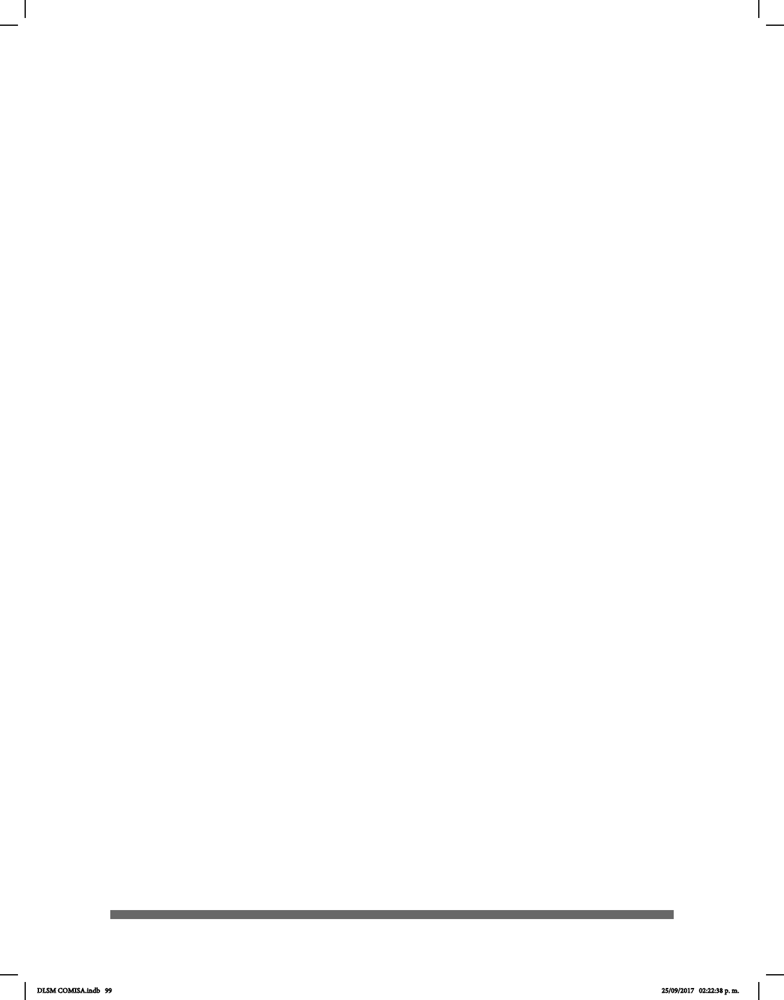

99
Para comprender mejor la estructura del DLSM, es importante tener en cuenta los
siguientes elementos que en la obra tienen el siguiente orden:
I. Número de entrada (conguración manual, guión medio, número; por ejemplo: C-17,
es decir, la entrada número 17 de la conguración C).
II. Entrada
III. Imagen principal. Para enfatizar los contrastes, las personas que aparecen en este
diccionario utilizaron playera color negro.
IV. Imagen(es) auxiliar(es).
V. Vista lateral de la seña.
En el diccionario existen otros elementos que, si bien no aparecen en todas las
entradas, son importantes:
VI. Flechas que indican la dirección de los movimientos.
VII. Numeración de imágenes.
VIII. Guiones.
IX. Diagonales.
X. Símbolo de registro de marcas comerciales.
XI. Extranjerismos.
DLSM COMISA.indb 99 25/09/2017 02:22:38 p. m.